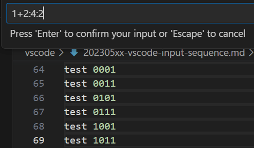
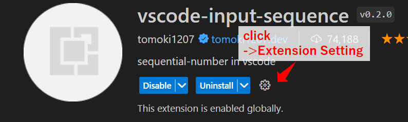

2023/05/15
Using the VSCode extension 'vscode-input-sequence'
The 'vscode-input-sequence' is an extension that allows you to add sequential numbers to text or source code.
- You can specify the start of sequential number input and the numerical value of the step to be increased or decreased.
- You can specify the operation (+ or -) of the sequential number.
- Specify the number of digits.
- Specify the radix (decimal, binary, etc.).
vscode-input-sequence - Visual Studio Marketplace
Extension for Visual Studio Code - sequential-number in vscode
How to use
Here are the steps to add sequential numbers:
- Make multiple selections (hold Alt while making selections, or use Shift + Alt for column selection).
- Press Ctrl + Alt + 0.
- Enter the sequential numbering settings.
The sequential numbering settings is in the following format:
<start> <operator> <step> : <digit> : <radix>
| setting | description |
|---|---|
| start | The starting number. |
| operator | The operator to use. Specify either '+' or '-'. |
| step | The increment or decrement value. |
| digit | The number of digits. |
| radix | The radix. If set to 2, the numbers will be displayed in binary. |
Note : All values except for 'start' are optional."
example :
1+1:2 : To count up from 1 with an increment of 1, a 2-digit display

1+2:4:2 : To count up from 1 with an increment of 2, a 4-digit display, in binary:
Setting
It appears that the extension has not been maintained for a long time and may have some bugs.
To work around this, the following settings are required

reference
recently,it is repeated for each character entered · Issue #15 · tomoki1207/vscode-input-sequence